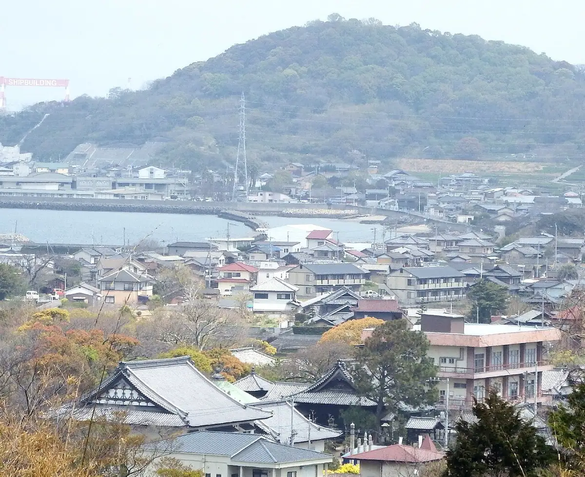
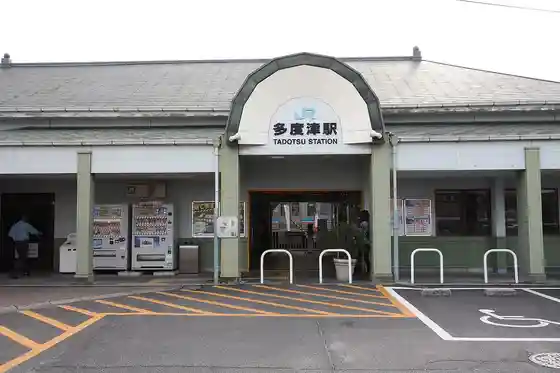
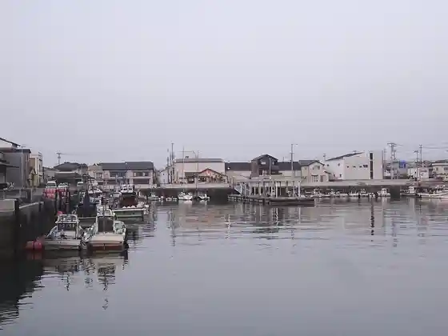

Tadotsu
Tadotsu · Kagawa
Tadotsu
Highlighted on the Kagawa map.

Stay
Hotel Toyota
Ko Minka Sutei Koro Ken
Sora to Ie Honto ^
ZERO BASE villa (Haku Rutto)
Mahorobahausu
Petto to Toma Reru Yado Jun Hana / Minpaku
Dining
Yakiniku Senmonten Sei Ya
Base65Plus
Kaishoku Tokoro Warai Kadoya
Sanuki Ra Men Ibuki Iriko Center Ne Tsu CO LABO Tadotsu Mise
Ieju Sha
Hiro Hama Udon
Suzume no Sakaba
O Konomi Yaki Yokota
O Ban Na Ito
Wakayama
Kinu no Kan
Mugi Warai
Ne Tsu Ko
Shanhai Ken
Yaki Koya Sato
Taiwan Ryori Cho Ki
Experience
Toryo Park
Sights
Coast Tera
Tadotsu Eki

Tadotsu Minato
